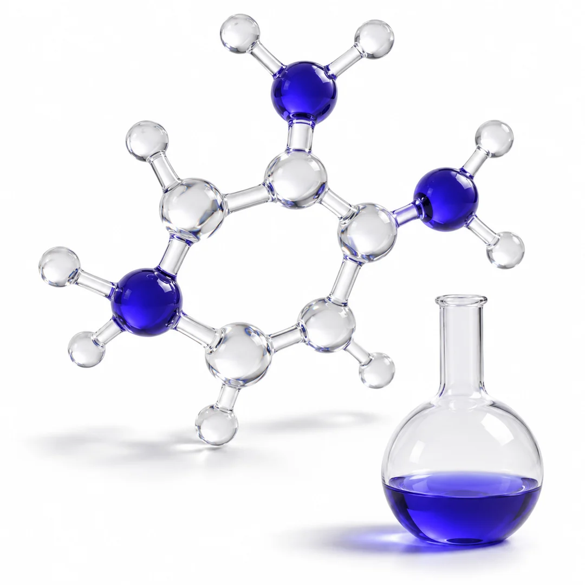

Подготовка к экзамену · Продвинутый уровень
Общая и✳
неорганическая
химия
Теория с выводами, разобранные примеры и задачи по программе курса.

до химического эксперимента
Теория и практика
Программа курса.
В каждой теме есть объяснение, разобранный пример и две задачи. Решение каждого пункта можно открыть отдельно.
Введение и номенклатура
Язык химии, эксперимент и названия неорганических соединений
Атомно-молекулярное учение
Моль, стехиометрические законы, формула по экспериментальным данным и газовые смеси
Строение атома
Модель Бора, орбитали, квантовые числа, электронные конфигурации и правила Слэтера
Периодический закон
Радиусы атомов и ионов, ионизация, сродство к электрону и электроотрицательность
Химическая связь
Структуры Льюиса, метод Гиллеспи, валентные связи и молекулярные орбитали
Комплексные соединения
Координационная сфера, лиганды, кристаллическое поле, магнитность и изомерия
Межмолекулярные силы и кристаллы
Водородная связь, фазовая диаграмма, упаковка, зонная теория и дефекты
Химические процессы
Первый и второй законы, Гесс, Гиббс, равновесие, кинетика и механизмы
Растворы и ионные равновесия
Концентрации, активности, коллигативные свойства, буферы, осадки и гидролиз
Окислительно-восстановительные процессы
Полуреакции, Нернст, диаграммы Латимера, элементы и электролиз
Водород и гидриды
Изотопы, свойства H₂, ионные, ковалентные и металлические гидриды
Благородные газы и соединения ксенона
He, Ne, Ar, Kr, Xe, Rn, фториды, оксиды и клатраты
Галогены · группа 17
Галогеноводороды, галогениды, интергалогены, полигалогениды и оксокислоты
Халькогены · группа 16
O₂, озон, пероксиды, сера, халькогениды, оксиды и кислоты
Пниктогены · группа 15
Азот, фосфор, мышьяк, сурьма и висмут, гидриды, оксиды и оксокислоты
Углерод и его аналоги · группа 14
Углерод, кремний, германий, олово и свинец, силикаты и карбонаты
Бор и его аналоги · группа 13
Бораны, борная кислота, амфотерность алюминия и инертная пара
Щелочные металлы · группа 1
Li, Na, K, Rb, Cs, соединения кислорода, соли и комплексообразование
Бериллий, магний и щёлочноземельные металлы
Группа 2, диагональные аналогии, растворимость, жёсткость воды
Скандий, иттрий и f-элементы
Группа 3, лантаноидное сжатие, степени окисления 4f- и 5f-элементов
Титан, цирконий и гафний
Группа 4, пассивация, Ti(III/IV), гидролиз и фторокомплексы
Ванадий, ниобий и тантал
Оксиды, оксокатионы, ванадаты, пассивация и высокие степени окисления
Хром, молибден и вольфрам
Амфотерность Cr(III), хроматы, поликислоты, карбонилы и кластеры
Марганец, технеций и рений
Степени окисления, перманганат в разных средах, манганат и кластеры
Семейство железа и платиновые металлы
Fe, Co, Ni, Ru, Rh, Pd, Os, Ir, Pt, оксиды, ферраты и координационные соединения
Медь, серебро и золото
Группа 11, Cu(I/II), Ag(I), Au(I/III), осаждение и комплексообразование
Цинк, кадмий и ртуть
Группа 12, d¹⁰-ион, амфотерность Zn, Hg(I/II) и конкуренция равновесий
Химическая систематика и металлургия
Связь блоков, вторичная периодичность, оксиды, диаграмма Эллингема и способы получения металлов
Химический эксперимент
Квалификация реактивов, измерения, разделение, выход, контроль и безопасность
Темы не найдены. Попробуйте другую формулу или выберите «Все».
Подготовка к устному ответу
Экзаменационные билеты.
В каждом билете два теоретических вопроса и расчётная задача. Сформулируйте ответ, затем откройте разбор.
Источники
- «Программа курса „Неорганическая химия“», предоставленный PDF, с. 1–25. Страницы указаны в каждом уроке. Нумерация тем на сайте сквозная.
- Ю. Д. Третьяков (ред.). Неорганическая химия. Т. 1–2. Академия, 2004.
- Д. Шрайвер, П. Эткинс. Неорганическая химия. Т. 1–2. Мир, 2004.
- IUPAC Red Book — номенклатура неорганических и координационных соединений.
- NIST Chemistry WebBook — справочные термохимические и спектральные данные.